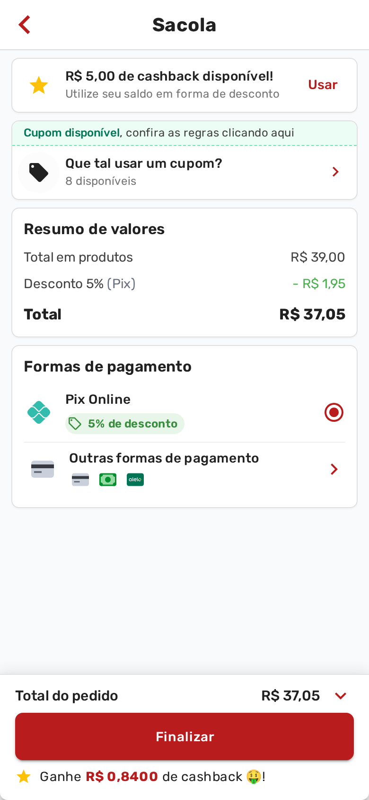

<!-- Capa em ordem direta. As três capas anteriores foram duas perguntas
     ("Cansou de esquecer a bebida?", "Seu cardápio já fala inglês?") e uma
     afirmação ("Sua capa agora é um carrossel"); repetir a afirmação agora
     começaria o mesmo cacoete de novo, um molde depois.

     O fato escolhido é o que o dono faz assim que entende o recurso: pôr
     desconto no Pix. Dos três exemplos da novidade é o único em que ele ganha
     dos dois lados — não paga taxa de cartão e recebe na hora.

     A imagem é o resultado, e não o cadastro: a sacola do cliente com o Pix
     escolhido, a linha do desconto e o total já abatido. É print de produção do
     manual #64, referenciado de lá — o mesmo arquivo, sem cópia. -->
<div class="slide slide--capa">
  <div class="topo">
    <span class="logo"></span>
    <span class="contador">1 de 7</span>
  </div>

  <div class="pilha g24" style="margin-top: 26px; max-width: 880px">
    <span class="pilula pilula--novidade">Novidade</span>
    <h1 class="titulo">Dê 5% de desconto no <span class="destaque">Pix</span></h1>
    <!-- Uma linha só de subtítulo: o aparelho em pé come 830 px de altura, e a
         segunda linha desta frase saía por baixo do celular. -->
    <p class="subtitulo">
      O cliente vê o abatimento e escolhe sozinho.
    </p>
  </div>

  <div class="sangria" style="top: 540px; left: 50%; transform: translateX(-50%);
                              width: 604px">
    <div class="celular" style="width: 604px">
      <div class="celular__tela">
        
      </div>
    </div>
  </div>
</div>
